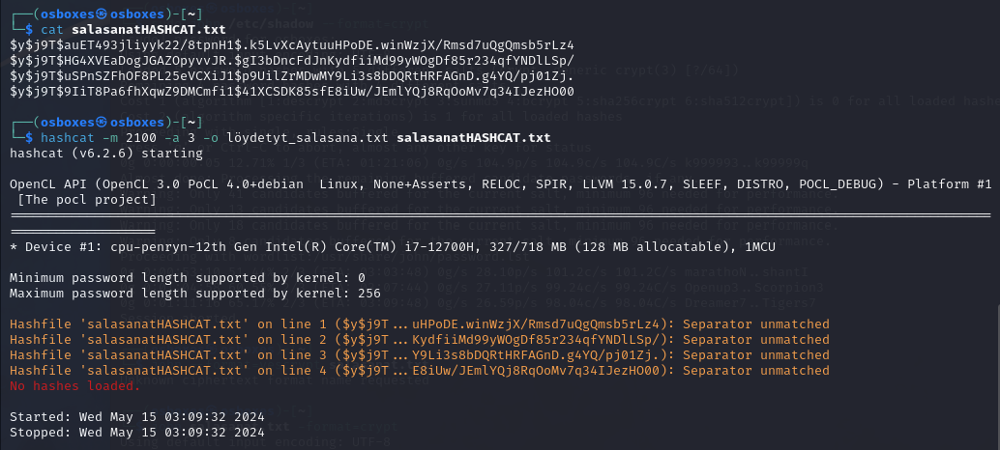
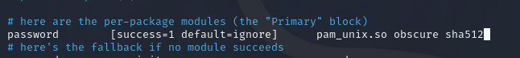
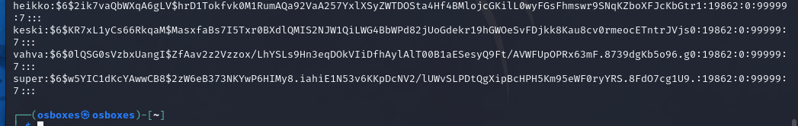
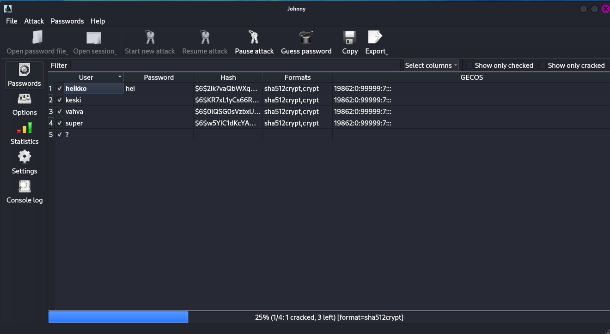
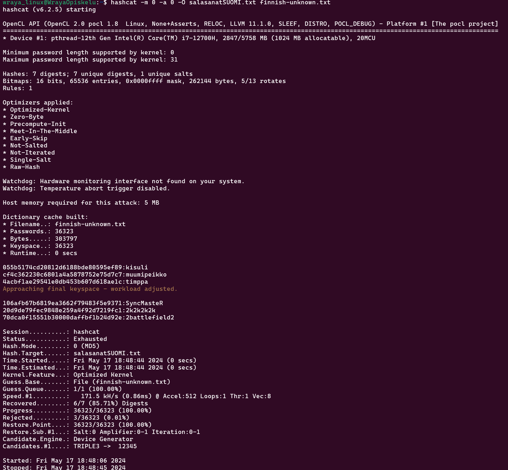
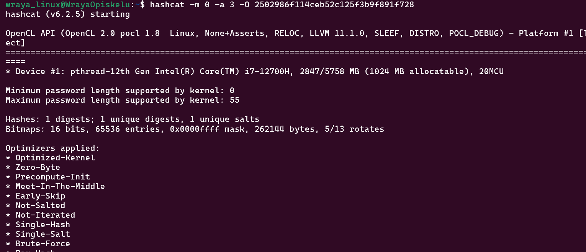
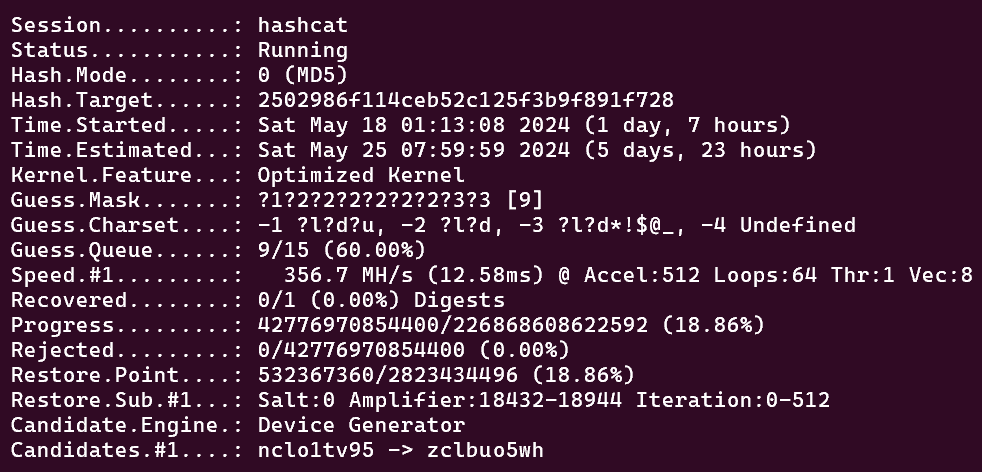
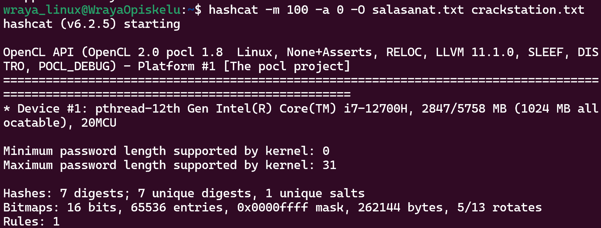
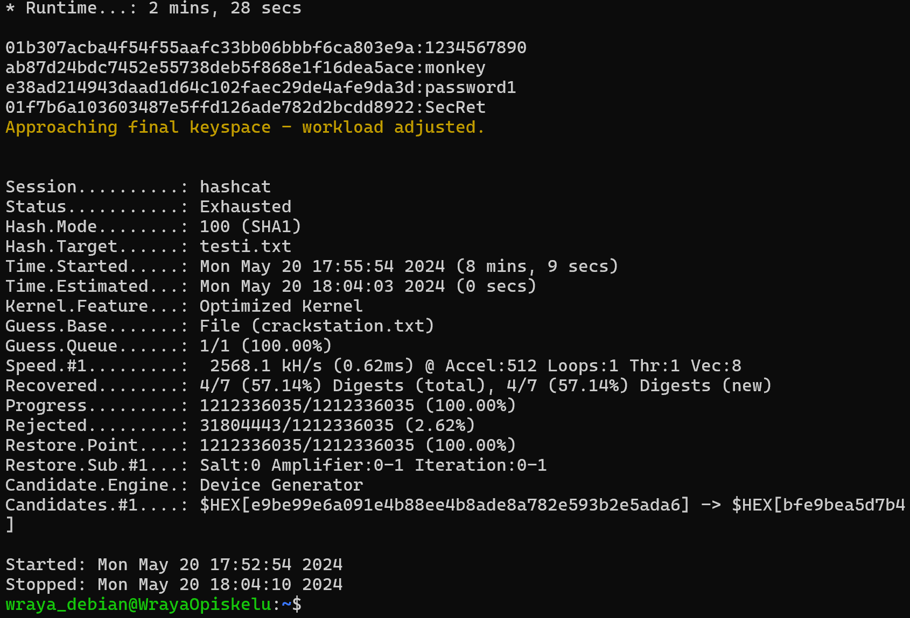

Kolme uutta käyttäjää: heikko, keski ja vahva ja nimiä vastaavat salasanat.
Luotujen käyttäjätunnusten murtaminen
Kokeiltu John The Ripper ja komentoa john /etc/shadow, mutta tämä ei toiminut.
Manuaalisesti avasin /etc/shadow ja siellä näkyi kaikkien (heikko, keski, vahva ja super) käyttäjien tiedot ja hashit
Googlailu kertoi että kyseinen hash-muoto on yescrypt ($y$) ja esim. että John The Ripper tukee vain epäsuorasti yescryptiä https://security.stackexchange.com/questions/252665/does-john-the-ripper-not-support-yescrypt
Tämän jälkeen onnistui. Heikon salasanan ohjelma mursi heti. Sen jälkeen näytti, että John The Ripper päätti ottaa käyttöön sanalistan (Proceeding with wordlist)...
Mutta mun koneeni (tai siis virtuaalikone) ei ole ilmeisesti hakkerointiin soveltuva, sillä se rullaa hyvin hitaasti ja vaikka jätin yöksi päälle, niin se ei saanut siinäkään ajassa ratkottua muita.
Jäin miettimään, että voisiko graafinen versio toimia paremmin ja latasin koneelle Johnnyn ja tallensin luomieni käyttäjien tiedot omaan tiedostoon, niin ohjelma ei myös yrittäisi ratkoa omaa salasanaani.
Johnny oli teoriassa helppo käyttää, mutta siinäkin törmäsin ongelmaan: ettei hashiä ole ladattu, vaikak selkeästi Johnnyn password sivulla näkyy se, että on osannut erotella käyttäjät, hashin ja muut...
Eli takaisin komentorivikäskyihin. Heikko murtuu parissa sekunnissa, mutta muut eivät. Laskeskelin https://www.security.org/how-secure-is-my-password/ sivuston avulla miten kauan pitäisi kestää murtaminen: (heikko 400 nanosekuntia, keski 22 millisekuntia, vahva 800 mikrosekuntia (vahva oli itseasiassa lyhyempi kuin keski, minkä vuoksi nopeampi purkaa erikoismerkistä huolimatta...) ja superin murtamisessa menisi 6kk (eli ei tämän kurssin aikana)
Kun laskeskelin, että jos heikon murtamiseen meni mun koneella pari sekuntia, niin keski murtamiseen menee 55000 kertaa kauemmin, eli mun koneella 15-30 tuntia (55000 * 1s = noin 15 tuntia ja 55000 * 2s = noin 30 tuntia)
Yritin kokeilla myös HashCat-ohjelmalla, mutta siinä tuli samoja ongelmia ja vaikka yritin netistä ja tekoälyn avulla, niin en onnistunut. Ilmeisesti Hashtype-numero olisi 2100 (tekoälyn ehdottama, ei löytynyt manuaalista ja googlesta tulleet ehdotukset, esim. 1800 vain herjasi, että token length exception ja This error happens if the wrong hash type is specified, if the hashes are
malformed, or if input is otherwise not as expected (for example, if the
--username option is used but no username is present)

Vaihdettu virtuaali Kalin salasana-asetuksia niin, että salasanat suojataan SHA512 avulla yescryptin sijaan. Salasanat piti vaihtaa, jotta cryptaus tapa muuttui. Tämäm jälkeen salasanojen cryptaus oli SHA512-muodossa.

Ainakin graafinen Johnnyt-versio toimii nyt!

Salasanan murtaminen sanakirjojen ja sateenkaaritaulukoiden avulla
Suomi-salasanalista
Aloitin Kali Linuxilla, mutta ilmeisesti virtuaalikoneellani ei vaan ole tarpeeksi suoritintehoja. Siirryin käyttämään windowisin command promptiin asennttua ubuntua, jos sillä onnistuisi ja olisi käytössä enemmän koneen resursseja kuin virtuaalikoneella...
Suomi-salasanalistan avulla onnistui ratkaista 6 salasanaa: kisuli, muumipeikko, timppa, SyncMasteR, 2k2k2k2k ja 2battlefield2. Viimeisin jäi ratkaisematta.

Loppujen murtaminen raakaa laskentaa käyttäen
Aloitettu ja jaksettu pyörittää päivä, mutta luovutettu, kun jo pari päivää rullattu ja tässä vaiheessa 9/15 arvioitu aika oli la 25.5. ja senkin jälkeen vasta siirtynyt taas seuraavaan vaiheeseen 10/15, päätin luovuttaa. En jaksa viikkoa pitää konetta pyörimässä.. Eli luovutettu ja salasana jäi murtamatta. Pitää hankkia kone, jossa on paremmat tehot...

Sateenkaaritaulut
Kun aloitin murtamisen, niin jostain syystä herjasi: INFO: Removed 4 hashes found as potfile entries or as empty hashes. En tiedä, olinko jotenkin tallentanut tiedostoon väärin...

Ilmeisesi jokin aikaisempi kokeilu oli ehkä ratkaissut nämä, sillä kun päätin vaihtaa linux-distroa uutta kokeilua varten, niin herjaa ei tullut.
Ehkä koska tein monivalintatentin ennen tätä tehtävää, ja vaikuttaa, että muutama sanasana oli tuttu siitä, niin se vaikutti tuohon, että aiemmin herjasi...
Eli sateenkaaritaulun avulla sain purettua 4/7 (1234567890, monkey, password1. SecRet)

Murtaminen itse SHA-1
Minulla on huono fiilis, etten tule saamaan ratkaistua kolmea viimeistä hashia raakaa voimaa käyttäen, kun oman koneen tehot ovat heikot... Mutta kokeillaan